En LOGANCY creemos que cada perforación es más que un procedimiento: es una experiencia única y personalizada. Por ello, brindamos un servicio seguro, profesional y respaldado por estrictos protocolos de higiene y bioseguridad, garantizando el máximo cuidado, confianza y bienestar de nuestros clientes. Contamos con certificaciones en procedimientos de perforación y formación profesional en enfermería, ofreciendo mayor seguridad y profesionalismo en cada servicio. Trabajamos con materiales de alta calidad, incluyendo joyería en platino, y ofrecemos anestesia local para brindar una experiencia más cómoda y estética. Además, disponemos de servicio a domicilio, llevando nuestros estándares de calidad, atención y cuidado profesional hasta donde nuestros clientes lo necesiten.
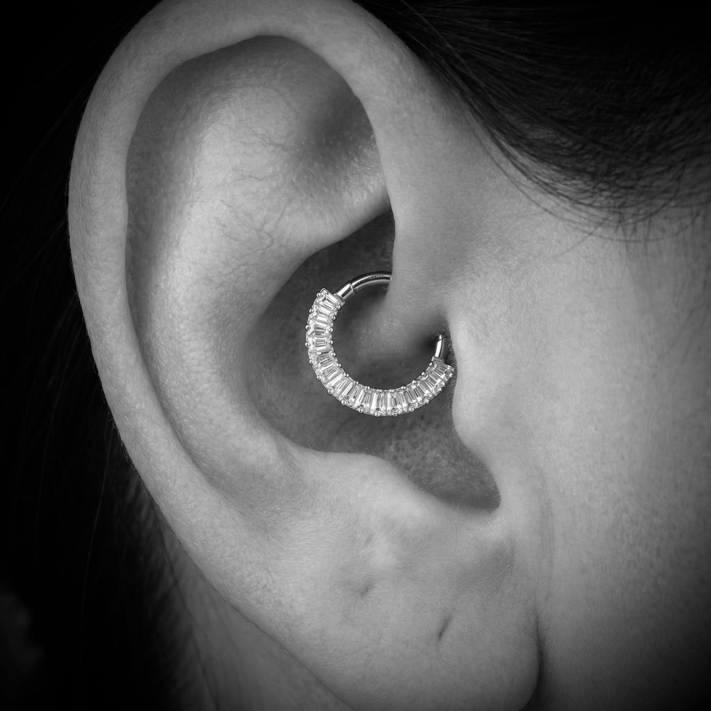
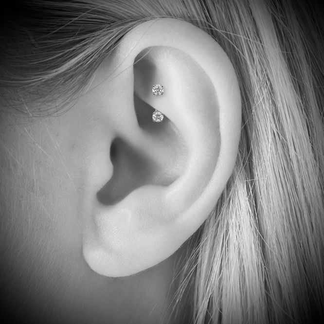
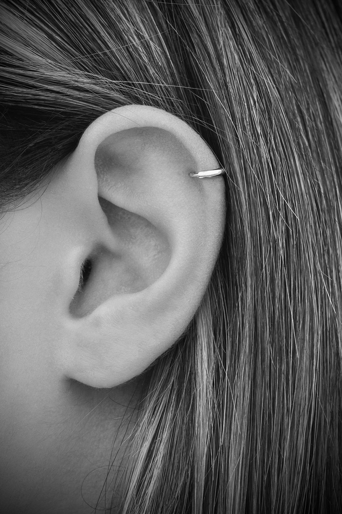
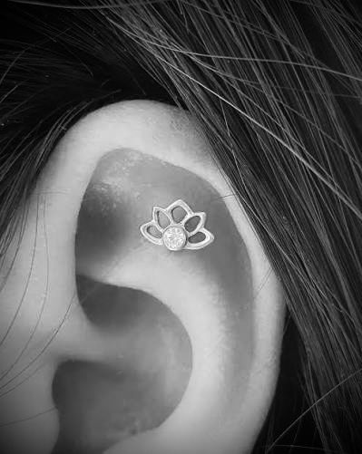
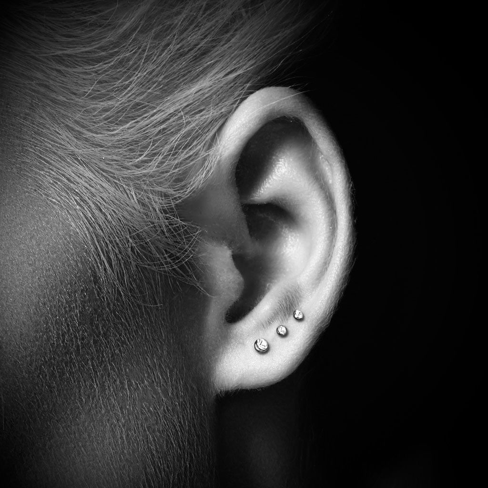
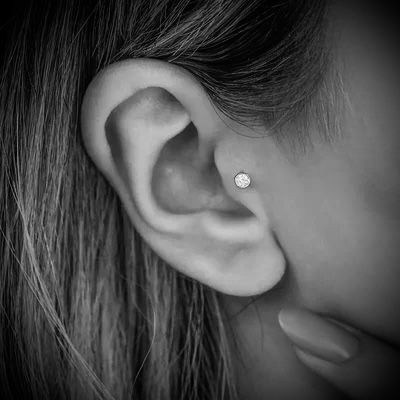
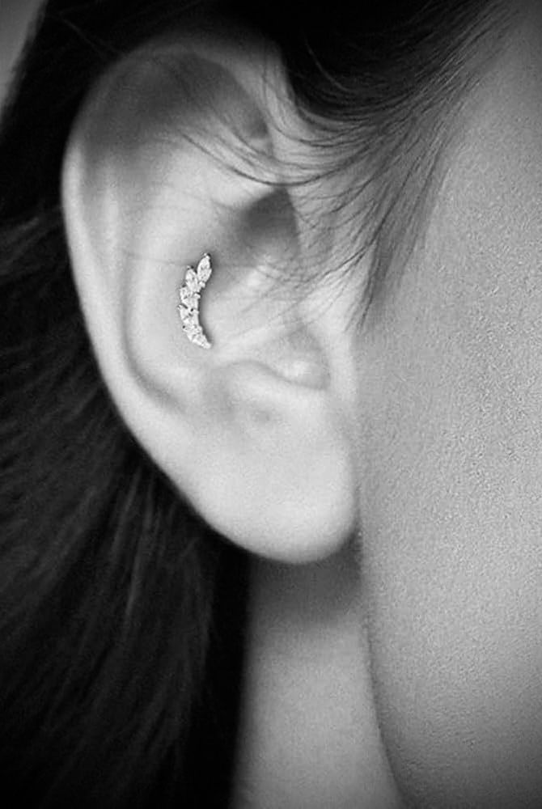
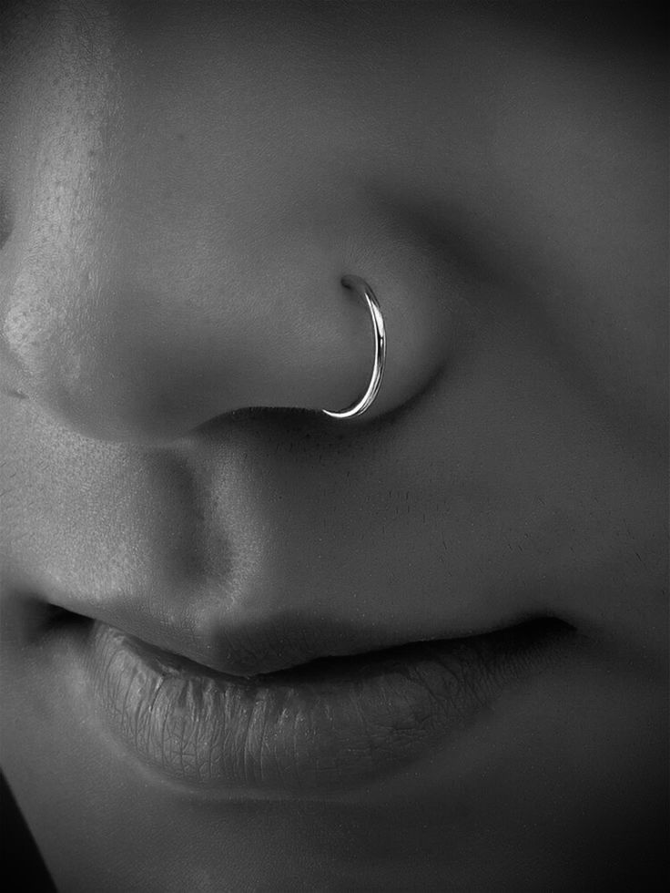
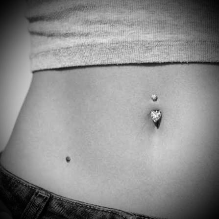
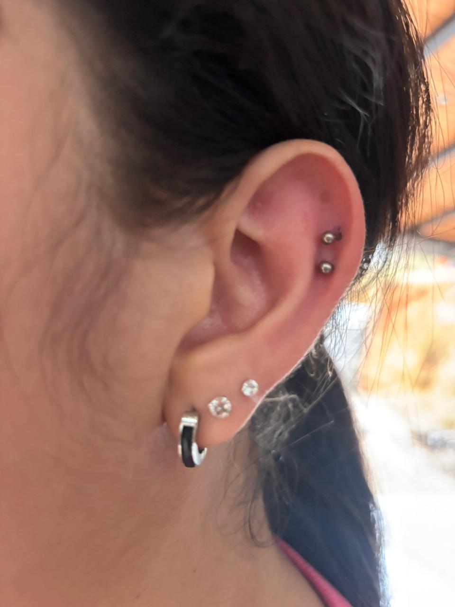
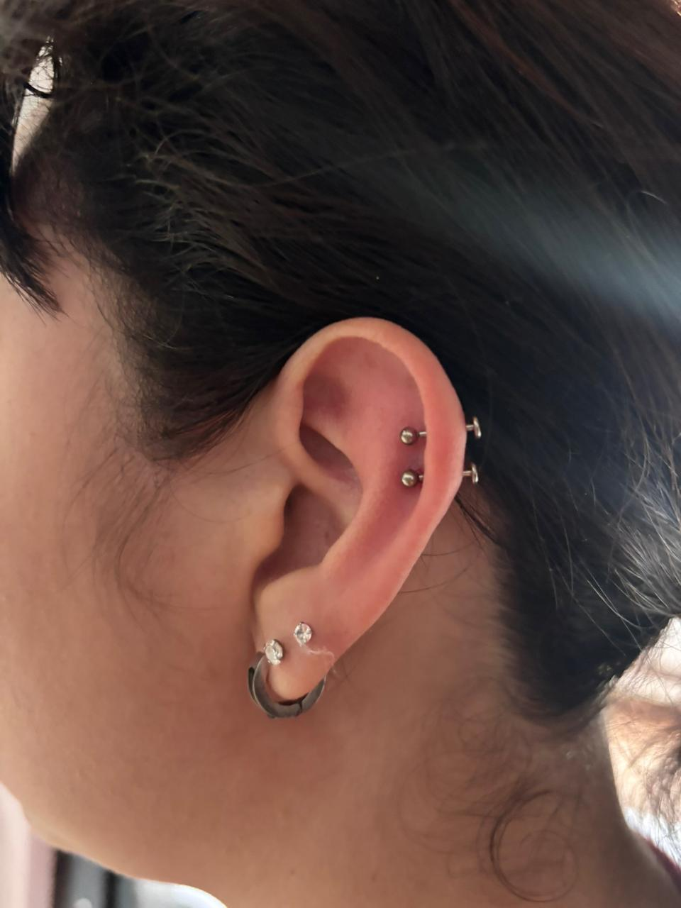
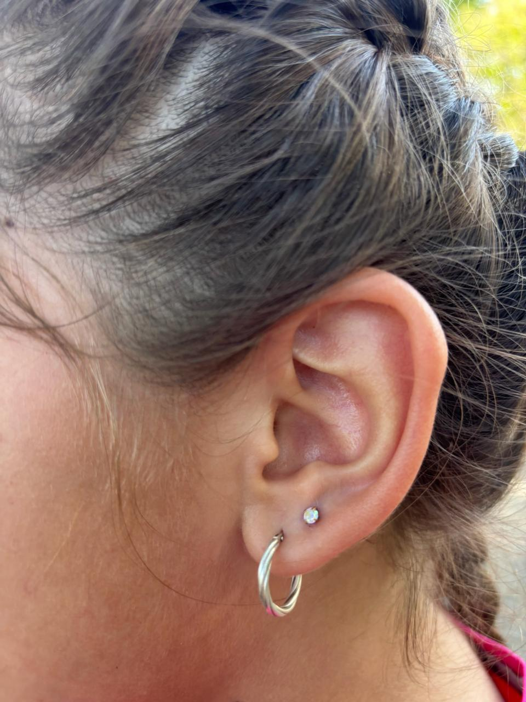
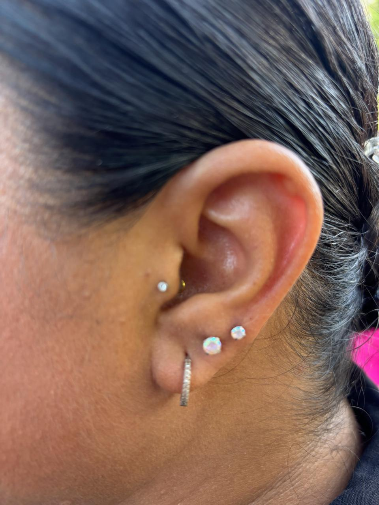
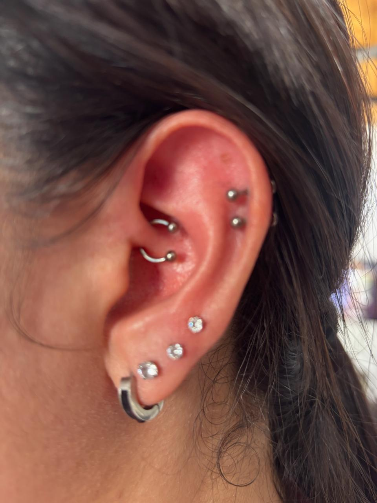
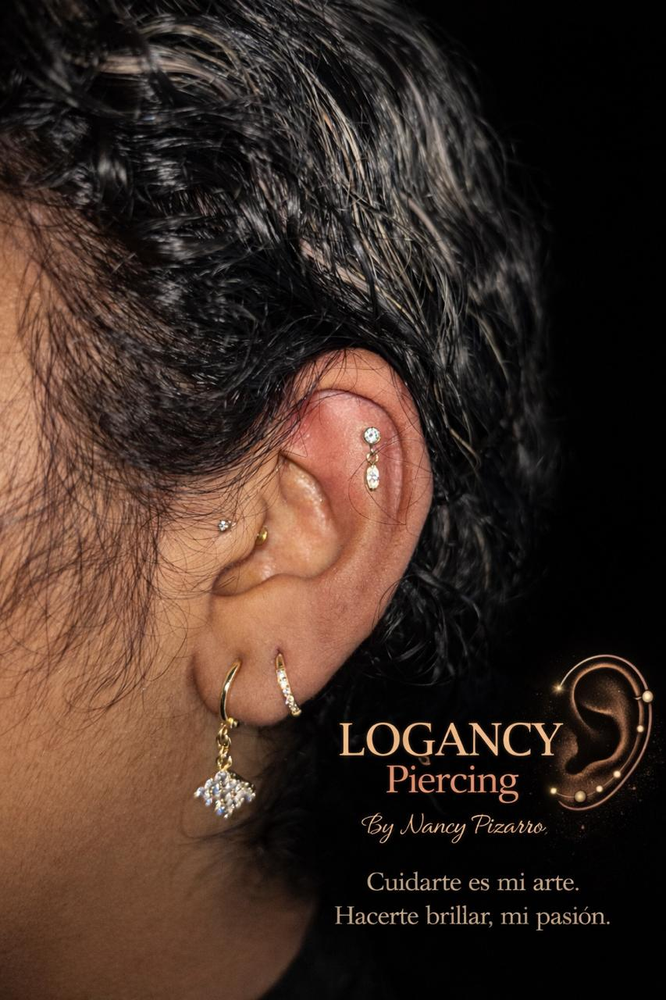